Phone chat: problems found and proposed fixes
I ran the current phone app (branch gpui/chat, version 0.1.33) in the Android emulator against a separate dev host with the scripted chat, and read the chat code against what the host now sends. Twenty-two problems came out of it. Each section below shows what the phone does now and what I propose. Nothing is implemented yet.
Now pictures are real screenshots from the emulator, except where a caption says the screen is drawn from the code. Proposed pictures are drawings in the app's own colours.
Answer under each section, then press Copy answers in the bar at the bottom and paste the result to Claude.
The problems
Seen live means I reproduced it in the emulator. From the code means the scripted chat could not show it, so it comes from reading the code. Size: S under a day, M one to two days, L more.
| # | Problem | Cause | Where | Size |
|---|---|---|---|---|
| 1 | A chat opens partway up its history, not at the newest message Seen live | The conversation is one plain scroll view holding every message. "Am I at the end" is worked out from scroll events, which also fire when the keyboard resizes the list and while the app scrolls by itself, so following switches off. Earlier messages are added above with nothing holding the reader's place. The exact trigger on open is not pinned down yet; it happened three times out of three. | S1 | M |
| 2 | With the keyboard open, the newest messages are hidden, and a message you send and the reply to it never come into view Seen live | S1 | ||
| 3 | "Load earlier messages" throws you to the top of the loaded page and loses your place Seen live | S1 | ||
| 4 | After scrolling up there is no way back to the newest message, and no sign that something new arrived From the code | S1 | ||
| 5 | Every loaded message is drawn at once, so a long chat gets slower the more you load From the code | S1 | ||
| 6 | Every tool call is its own boxed row: nine calls fill the screen Seen live | Rows are one to one with items. The desktop now groups them; the phone does not. | S2 | M |
| 7 | Opening a tool row with no output just repeats the command Seen live | A row opens whenever its text is longer than 32 characters, even when nothing was cut. | S2 | S |
| 8 | "Working…" sits inside the conversation, so it is off screen when you scroll up or type. It shows no time and not what the agent is doing Seen live | The indicator is the last item of the scroll view. | S3 | S |
| 9 | A question or a permission request can be off screen while the agent waits for you. Nothing else on screen says so Seen live | The request card is also an item at the end of the scroll view. | S3 | M |
| 10 | Compacting shows nothing until it is over; stopping shows nothing until the agent has stopped From the code | The phone does not read ChatState.compacting, and Stop has no pending state. | S3 | S |
| 11 | Background tasks do not show at all and cannot be stopped From the code | The phone does not read ChatState.background and never sends STOP_TASK. | S4 | M |
| 12 | A subagent's row says only "agent" and its task: not which agent, what it is doing, or how much it has done Seen live | The phone does not read the row's agent type, activity, tool count and tokens. | S4 | S |
| 13 | The agent's replies cannot be selected or copied Seen live | Reply text is not selectable and there is no copy action. | S5 | S |
| 14 | Editing a message is hidden behind a long press. The keyboard does not open, the message being edited is not marked, and the system Back button leaves the chat instead of cancelling Seen live | Long press only sets the draft. Nothing focuses the field or handles Back. | S5 | S |
| 15 | No fork from a reply From the code | The phone never sends FORK. It has only the /btw side question. | S5 | S |
| 16 | Messages carry no time Seen live | The item's time is on the wire and not drawn. | S5 | S |
| 17 | A half-written message is lost when you leave the chat From the code | The draft lives in the screen, which is thrown away on Back. | S5 | S |
| 18 | Tables come out as raw | lines. Code blocks have no box, wrap, and cannot be copied. Lists inside lists are flattened From the code | Chat reuses the small renderer written for voice replies, which draws a whole reply as one run of text. | S6 | M |
| 19 | No way to attach a photo or a file. A message sent from the desktop with attachments shows its text only, and an image-only message is an empty bubble From the code | The phone does not read or send attachments, and has no upload client. | S7 | L |
| 20 | The header says only the window name ("bash"). No state, no model. Its buttons are the text glyphs ♪ and i Seen live | The header was built before the chat had state worth showing; icons were never drawn. | S8 | S |
| 21 | Details shows the host's raw address and the full folder path, and nothing about the branch or what changed Seen live | The phone prints the pane's path as it is and sends no Git request. | S8 | M |
| 22 | In Workspaces a chat reads "0: bash / bash": nothing says it is a chat or that it is waiting for you. With voice not set up, turning voice on replaces the text field with a bar that does nothing Seen live | Window rows do not look at the pane's chat. Voice mode swaps the composer out before it knows voice can work. | S9 | S |
S1Where the chat lands and stays
Problems 1 to 5. One change fixes all five: the conversation becomes one list that is anchored to its end, draws only what is on screen, and holds your place when messages are added above. No change on the host.
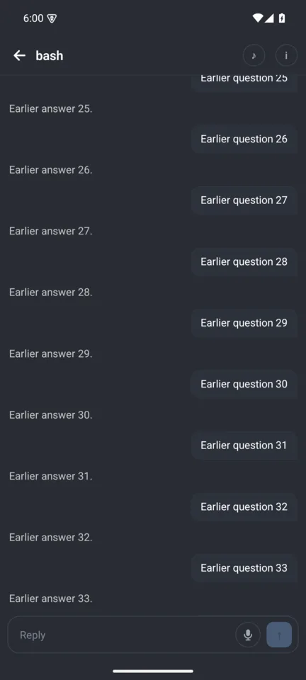
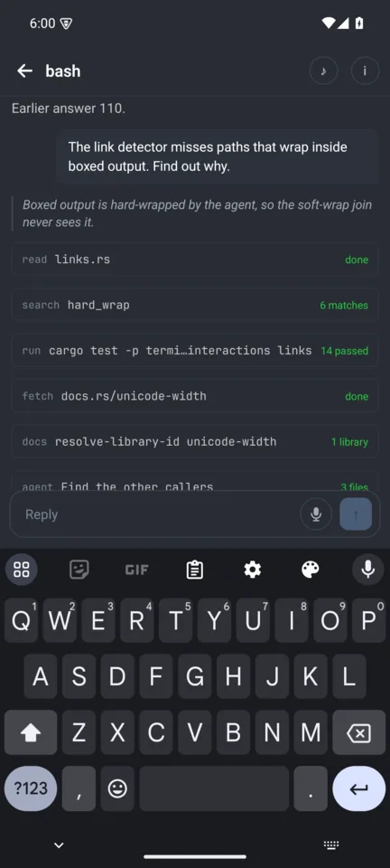
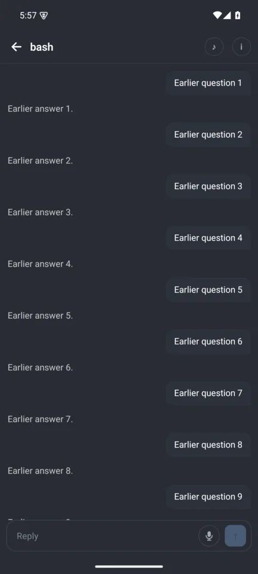
/ inside a box border is dropped, because the border ends the continuation.• The join is in
links.rs.• The fixture is
tests/fixtures/boxed.txt.tests/fixtures/boxed.txt.S2Tool calls grouped
Problems 6 and 7. The same grouping and the same words as the desktop: a run of tool calls and thinking between two pieces of text becomes one line you can open. No change on the host.
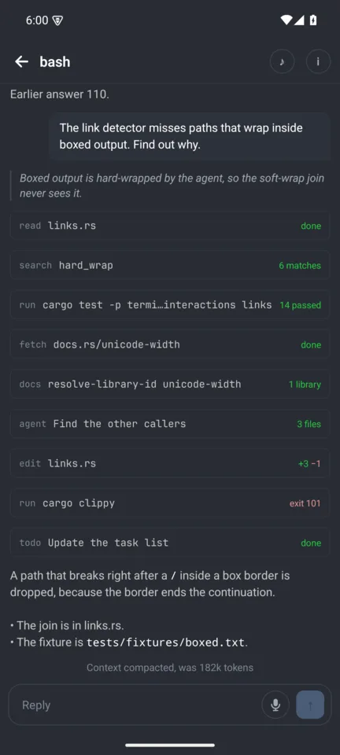
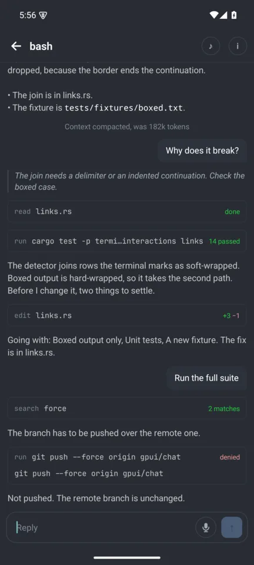
/ inside a box border is dropped, because the border ends the continuation.• The join is in
links.rs.• The fixture is
tests/fixtures/boxed.txt./ inside a box border is dropped…tests/fixtures/boxed.txt.S3Working, waiting for you, compacting
Problems 8 to 10. What the agent is doing, and anything it needs from you, moves out of the conversation and sits above the reply field, where scrolling and the keyboard cannot hide it. The phone starts reading the host's compacting flag. No change on the host.
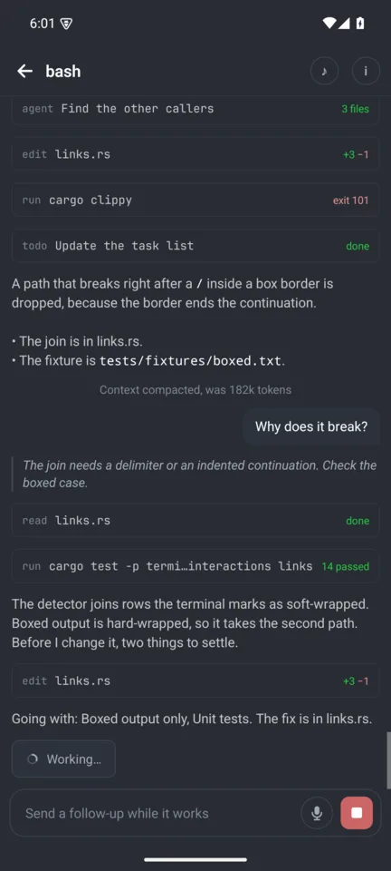
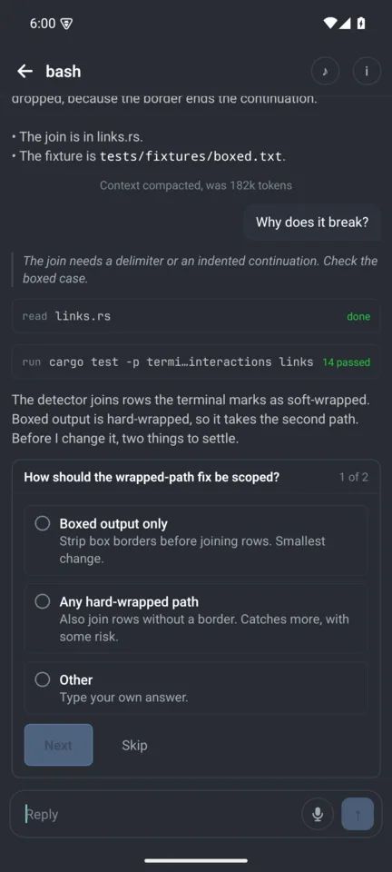
links.rs.S4Background tasks and subagents
Problems 11 and 12. The host already sends all of this for the desktop. The phone starts reading it and draws it the way the desktop does: a chip on the reply field that opens a list, and a subagent row that says who is doing what. No change on the host.
Background tasks
S5Messages: copy, edit, fork, time, drafts
Problems 13 to 17. Fork uses the action the desktop already has on the host. A draft is kept per chat until it is sent. No change on the host.
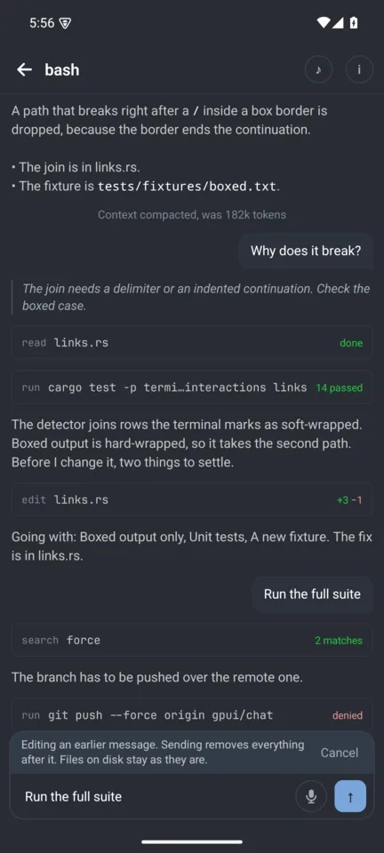
links.rs.links.rs.links.rs.S6Code, tables and lists in replies
Problem 18. Chat gets its own reply renderer. Voice replies keep theirs. No change on the host.
fn join(rows: &[Row]) -> String {
rows.iter().filter(|row| row.soft_wrap
}• left edge
• right edge
2. Join the rows
S7Photos and files
Problem 19. Showing what a message carries is small. Sending from the phone is the largest item on this page: it needs the photo and file pickers (two new native parts, so a new build of the app) and the phone has to learn the upload the desktop already does. The host needs no change for either.
Attach
S8Header and Details
Problems 20 and 21. The header gets a second line and drawn icons. Details names the place the way the desktop does and adds the branch and what changed, which means the phone starts asking the host for the Git summaries the desktop already asks for. No change on the host.
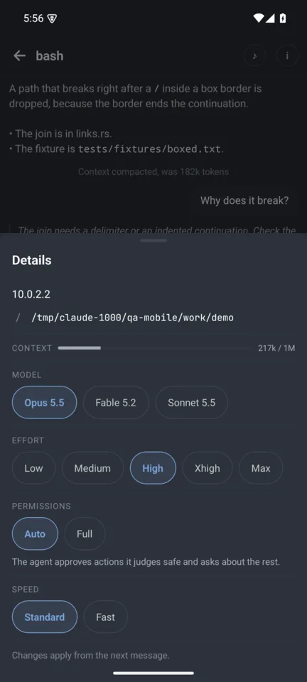
Details
~/… outside one), the branch, and the two change counts the desktop shows. The controls are unchanged.S9Smaller things
Problem 22, and two that need no picture.
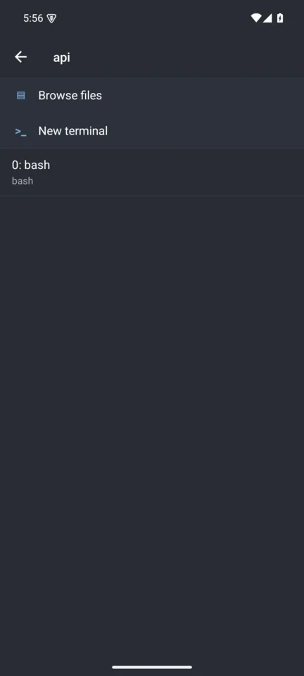
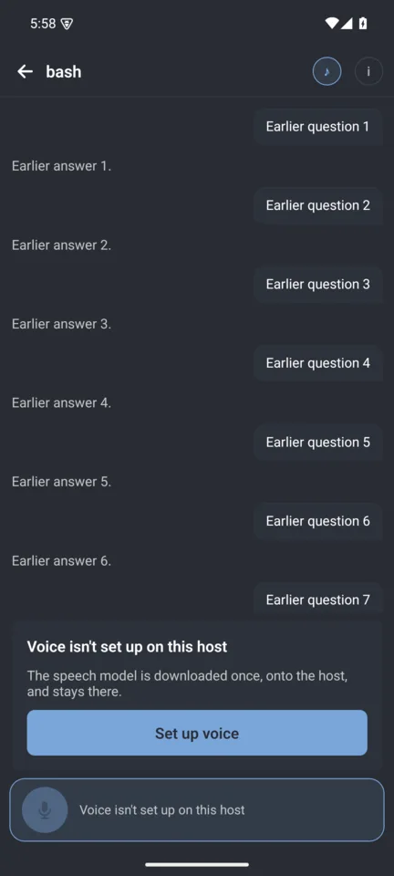
- Voice not set up. Proposed: the "Set up voice" card shows, and the text field stays until voice can actually be used.
- Send with nothing typed. Today it is a faded blue square that looks half-pressed. Proposed: a plain grey one, as drawn throughout this page.
Not checked, and left as it is
- iPhone. Everything here was seen on Android. There is no Mac on this machine to run the iPhone build.
- A real Claude Code or Codex chat. I used the host's scripted chat so that nothing of yours was touched. Real replies are longer and messier than the script.
- Notifications, voice with speech set up, a slow link and the Agents tab's rows for chats (the test host had no agent hooks).
- Left as it is: switching an agent between chat and terminal stays a desktop setting. The controls for model, effort, permissions and speed stay in Details; D7 is only about showing the current ones.
Your answers
Anything the questions do not cover:
The answers as text. It is what the Copy button copies; if copying fails, select all of it here.